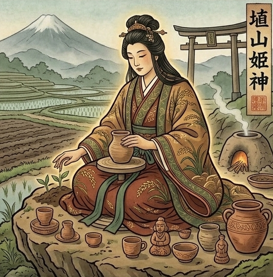

ついちゃん様、
あなたを守る神様が
彼とお互いを大切にし合い、
笑い合える関係が続いている姿を
そっと見せてくれました。
家庭に支障はなく、
でも二人の時間は特別で、
心から笑い合える。
そんな関係が、
ちゃんとあなたを待っています。
今は複雑な関係で、
どうなるか分からず
不安かもしれないけれど、
この縁には、ちゃんと意味があります。
お互いを大切にし合い、
いっぱい笑える未来が、
すぐそこまで来ています。

あなたを守っているのは、
埴山姫神(はにやまひめのかみ)。
粘土を司る大地の母のような女神です。
包容力が深く受け取り上手で、
人の痛みを自分のことのように
感じる共感力の加護を
受けているので、
彼を支え、受け止める優しさが
あるんです。
誰にも言えない想いを
抱えながらも、
前を向いてきた強さがある。
そして、彼との時間を大切に
したいという純粋な願いを
持っています。
でも今は、
この関係がどこへ向かうのか、
見えない。
これほど強い守護を受けているのに、
今あなたの心は揺れ、
本来の輝きも曇っています。
最近、
こんな感覚がありませんでしたか？
このままでいいのか、という疑問が、
頭から離れない。
お互いに支え合っているけれど、
この先どうなるのか、
答えが見えず、不安になる。
もっと大切にし合いたい。
でも、どこまで踏み込んでいいのか、
その境界線が分からず、迷っている。
本来のあなたなら、
こんなことで止まらない。
でも今は、
この関係の未来が見えないまま
どう進めばいいのか分からず、
不安と迷いを抱えている。
それが、
あなたの流れを止めています。
そして、心が揺らぐことで、
オーラも乱れ、
守護の力も届きにくくなっています。
ただ、
守護の力が消えたわけではありません。
私がオーラの鎮め方、
あなたの行く先、やるべき事を
霊視してお伝えするので、
安心してください。
このまま問題を放っておけば
今までと同じように
不安を抱え、迷いながら
毎日を過ごすことになります。
でも、
具体的なタイミング、
なにをすればいいのか
どういうことが起こるのかが
分かれば
あとは自分を整えて待つだけで
望む未来がやってきます。
大事なのは、
自分で幸せを掴みにいくと
心に決めること。
あなたの選択が、
あなたの未来を作っていくんです。
ここまでの鑑定で、
あなたを守る神様の存在と、
今なぜ流れが滞っているのかを
お伝えしました。
でも、本当に大切なのはここから。
あなたが理想の未来を
手に入れるために
以下の事を霊視して、お伝えします。
今、
あなたを守る存在の気配が、
いつもより強く近くにあります。
この鑑定に目を留めたことも、
偶然ではありません。
あなたの魂が、
このままではいけない、
流れを変えたい、
そう動き始めた合図です。
ここから24時間。
この間に一歩踏み出した決断は、
止まっていた運命を、
静かに動かし始めます。
進むべき道を知りたい。
そう感じた方だけ、
この先へ進んでください。
お申し込み後、
購入時のお名前を
お知らせください。
1日以内に、あなただけの鑑定書を
お届けします。
私には視えています。
彼とお互いを大切にし合い、
いっぱい笑っているあなたを。
今感じている不安も、
決して無駄ではありません。
この経験があったからこそ
辿り着ける幸せがあります。
その道を、私は守護神と共に、
照らしていきます。